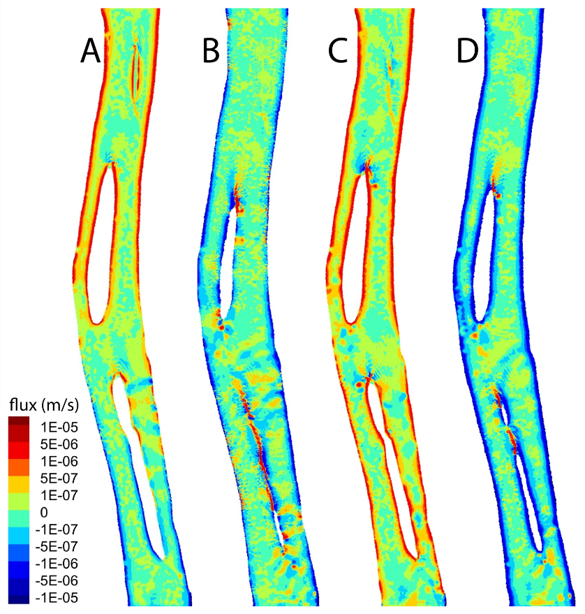
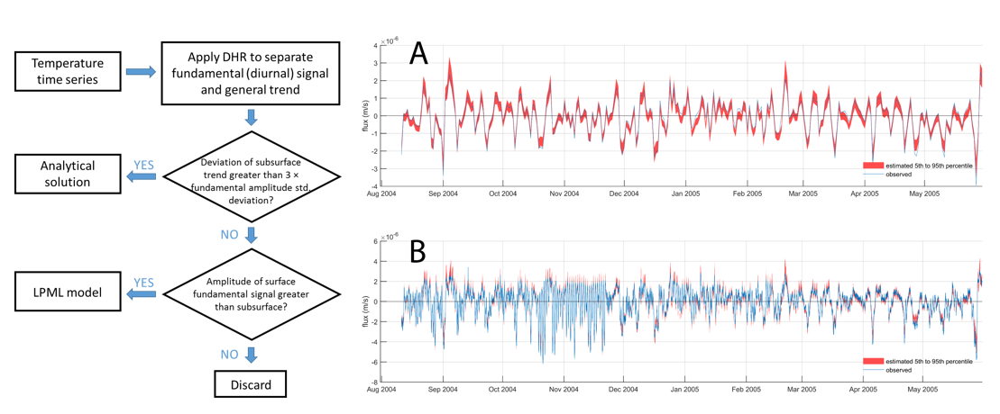
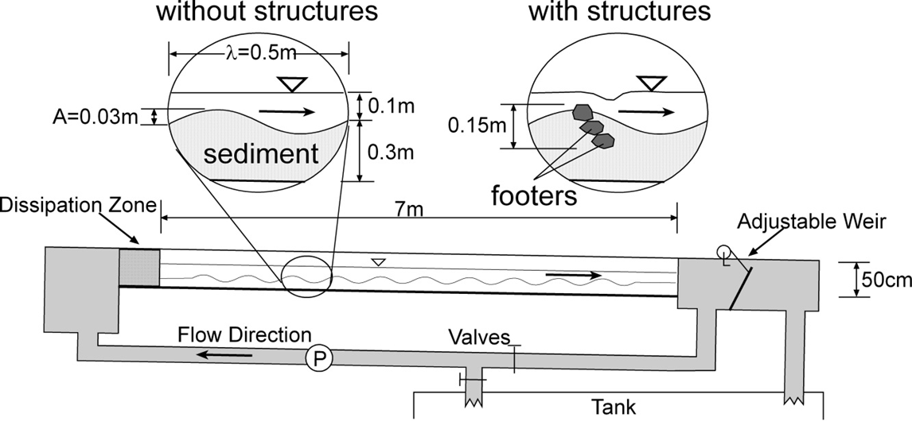
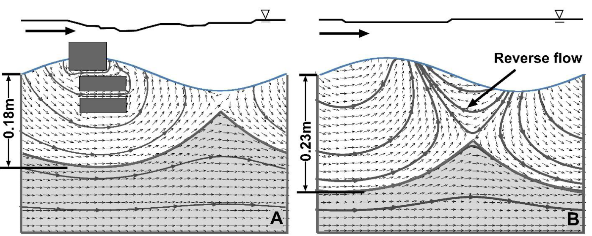
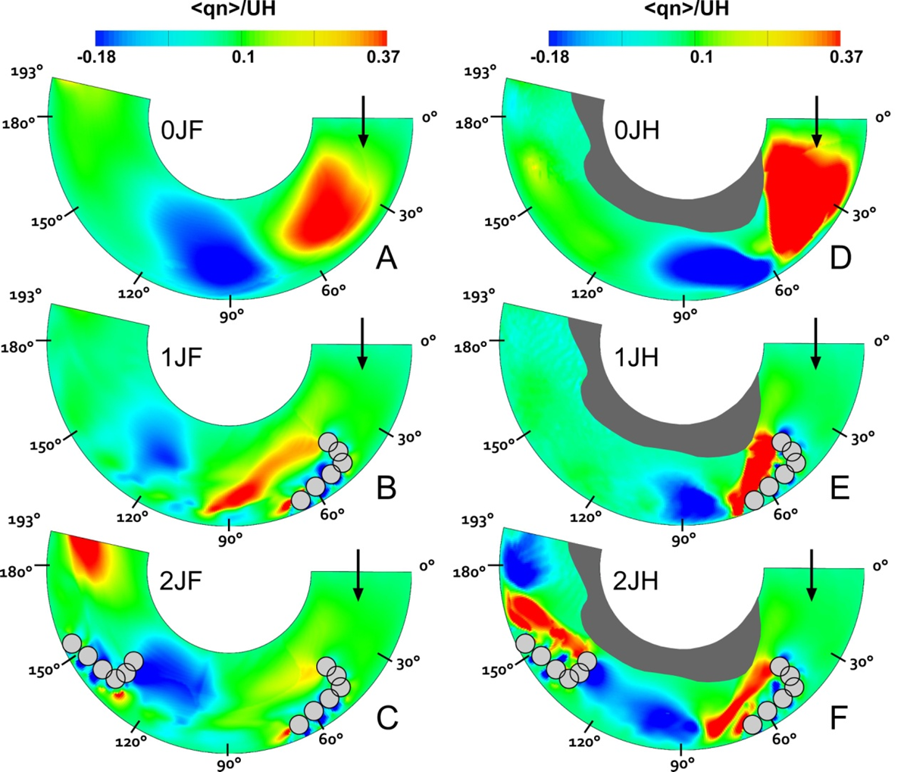
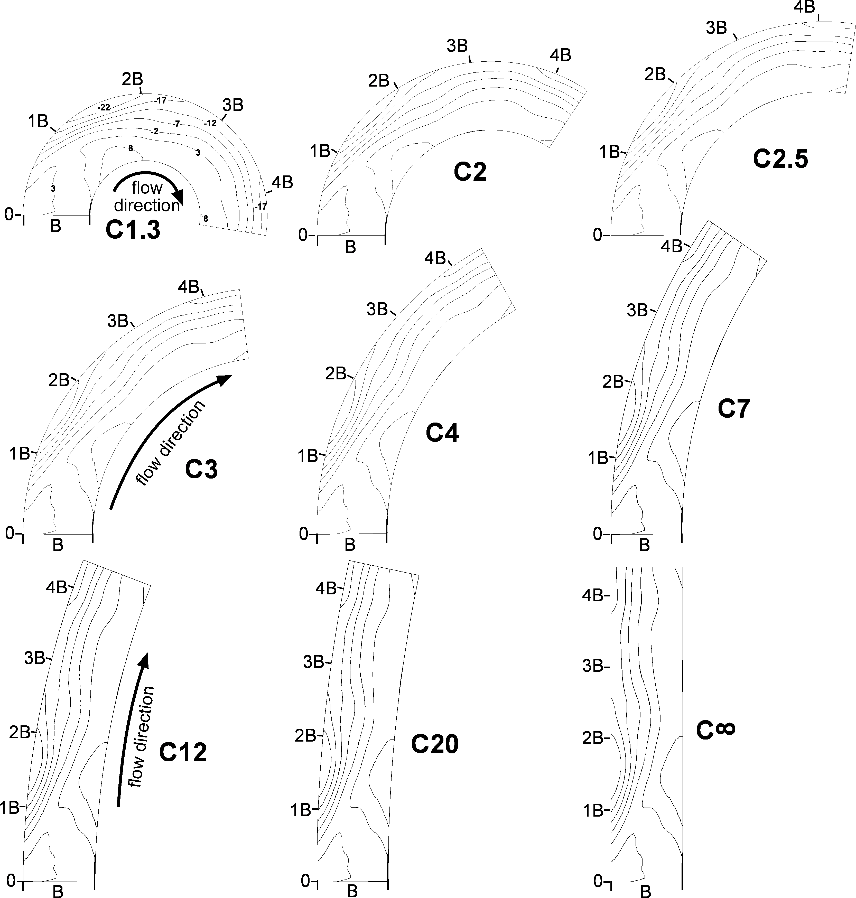

The overarching goal of my reach scale research is to understand the hydrodynamic, hyporheic, and ecologic responses to in-stream engineering designs.
In this paper we use CFD model to simulate a 7km reach in Columbia river and establish relationships between flow condition, inland water table level, and hyporheic flux rate
Zhou, T., J. Bao, M. Huang, Z. Hou, E. Arntzen, S. Harding, S. Titzler, H. Ren, C. Murray, W. Perkins, X. Chen, J. Stegen, G. Hammond, P. Thorne, J. Zachara (in revision) Quantifying hyporheic exchange dynamics in a highly regulated large river reach. Water Resources Research
In this paper we developed a new approach to quantify hyporheic flux rate based on point temperature signals
Zhou, T., M. Huang, J. Bao, Z. Hou, E. Arntzen, R. Mackley, A. Crump, A. Goldman, X. Song, Y. Xu, J. Zachara (in review) A new approach to quantify shallow water hyporheic exchanges in a large regulated river reach. Water
River restoration structures also change the mixing processes in the hyporheic zone, which is a valued ecological niche providing habitat for organisms, spawning grounds for fish, rooting zone for aquatic plants, as well as a set of nutrient transformation zones regulating water quality. This paper characterised the hyporhic exchange responses to restoration structures based on both flume experiments and model simulations. This figure shows the flume experiment settings and bed geometry.

This figure compares the model simulated groundwater flow paths with (left) and without (right) river restoration structures. Flow from left to right.
Zhou, T. and T. Endreny, 2013: Reshaping of the hyporheic zone beneath river restoration structures: flume and hydrodynamic experiments. Water Resources Research
River restoration stuctures change the flow patterns and further affect sediment transport processes and fish habitats. This paper quantified the hydrodynamic responses to the stream restoration structures under different flow conditions. Figure shows the model simulated cross-channel unit discharge in a tight meander bend at bankfull (left) and half-bankfull (right) flow with restoration structures (red color indicates flow toward outer bank direction)
Zhou, T. and T. Endreny, 2012: Meander hydrodynamics initiated by river restoration deflectors. Hydrological Processes
This paper investigated the hydrodynamic and hyporheic responses in channels with increasing curvature using CFD modeling. Figure shows the bed topography settings in nine different modeling scenarios. This paper links the previous studies together and applied the CFD simulation techniques in a boarder range of river systems.
Zhou, T. and T. Endreny, 2014 (under revision): Shaping the bedform of straight flumes to simulate meander bend hydrodynamics and hyporheic flux: computational fluid dynamic analysis. Hydrological Processes